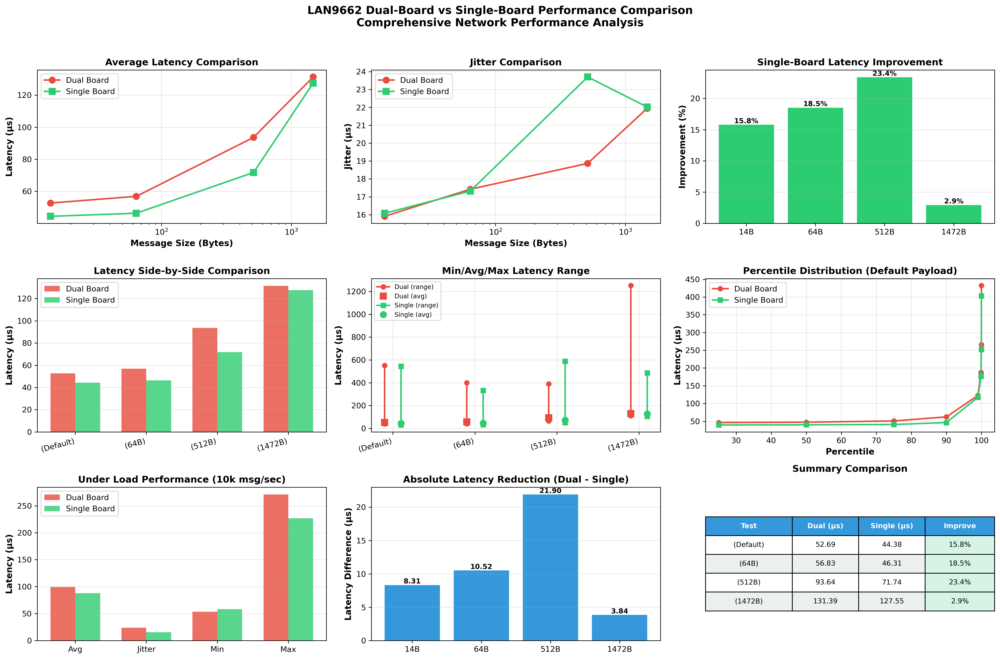

🔬 LAN9662 TSN Performance Analysis
Dual-Board vs Single-Board Configuration Comparison
Microchip VelocityDRIVE TSN Evaluation Platform | Test Date: 2025-11-05
Best Latency
44.38 μs
Single-Board Configuration
Latency Improvement
15.8%
Single vs Dual Board
Max Throughput
912 Mbps
Both Configurations
Per-Hop Cost
8.31 μs
Average (14B packets)
🏗️ Network Configurations
Dual-Board Configuration
192.168.1.2 (PC)
↓
LAN9662 Board #1
↓
LAN9662 Board #2
↓
192.168.1.3 (Server)
Avg Latency
52.69 μs
Jitter
15.91 μs
Throughput
912.72 Mbps
Single-Board Configuration WINNER
192.168.1.2 (PC)
↓
LAN9662 Board #1
↓
192.168.1.3 (Server)
⚡ Shorter Path
Avg Latency
44.38 μs ↓
Jitter
16.08 μs
Throughput
912.72 Mbps
🎯 Key Finding: Removing one LAN9662 board from the network path reduces average latency by 8.31 μs (15.8% improvement) while maintaining identical throughput performance at 912.72 Mbps.
📊 Performance Comparison
Comprehensive Performance Analysis
Latency by Message Size
| Message Size | Dual-Board (μs) | Single-Board (μs) | Improvement | Absolute Reduction |
|---|---|---|---|---|
| 14B Default | 52.69 | 44.38 | 15.8% | 8.31 μs |
| 64B Small | 56.83 | 46.31 | 18.5% | 10.52 μs |
| 512B Medium | 93.64 | 71.74 | 23.4% | 21.90 μs |
| 1472B MTU | 131.39 | 127.55 | 2.9% | 3.84 μs |
💡 Insight: Medium-sized packets (512B) show the highest latency improvement (23.4%), while large MTU-sized packets (1472B) converge with only 2.9% difference. This suggests fixed processing overhead dominates for small packets.
📈 Detailed Results
Dual-Board Performance Analysis

Percentile Latency Distribution (14B Payload)
| Percentile | Dual-Board (μs) | Single-Board (μs) | Improvement |
|---|---|---|---|
| Min | 38.75 | 30.56 | 8.19 μs |
| 50th (Median) | 47.32 | 40.07 | 7.25 μs |
| 90th | 62.33 | 46.31 | 16.02 μs |
| 99th | 122.60 | 117.49 | 5.11 μs |
| 99.9th | 187.83 | 176.61 | 11.22 μs |
| Max | 551.36 | 544.18 | 7.18 μs |
🎯 Recommendations
✅ Choose Single-Board When:
- Latency budget is tight (< 100 μs)
- Simple point-to-point topology
- Cost optimization is priority
- Ultra-low latency requirements
- Real-time control loops
✅ Choose Dual-Board When:
- Topology requires intermediate switching
- Redundant paths needed (FRER)
- Port count expansion required
- Latency budget allows (> 100 μs)
- Extended physical reach needed
📦 Test Data & Resources
Available Files
📄 Documentation
- • README.md
- • COMPARISON.md
📊 Visualizations
- • test_results_visualization.png
- • comparison_dual_vs_single.png
🐍 Analysis Scripts
- • analyze_results.py
- • compare_dual_vs_single.py
📝 Raw Test Data
- • sockperf_*.txt (14 files)
Test Environment
Hardware: 2× Microchip LAN9662 VelocityDRIVE TSN Evaluation Boards
Software: Ubuntu 22.04.3 LTS (Low-latency kernel 6.8.0-63)
Tool: sockperf v3.7-no.git
Protocol: UDP
Test Date: 2025-11-05
Software: Ubuntu 22.04.3 LTS (Low-latency kernel 6.8.0-63)
Tool: sockperf v3.7-no.git
Protocol: UDP
Test Date: 2025-11-05